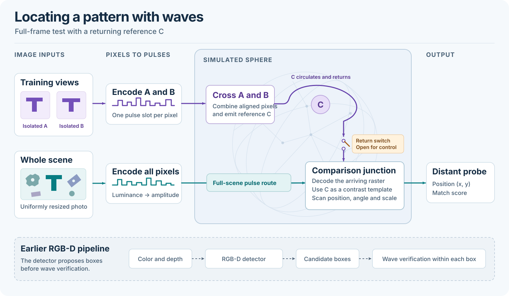
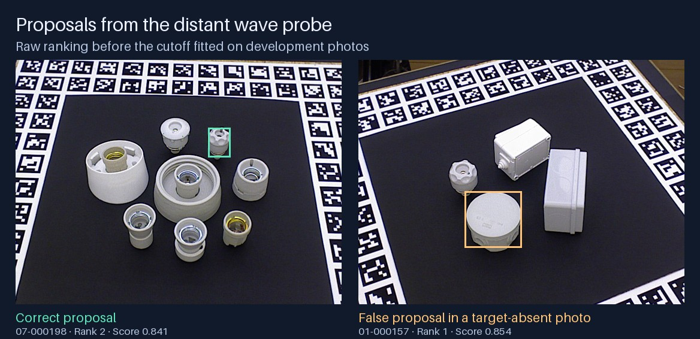

A whole photo through the sphere
Two isolated examples form a returning reference wave. A junction compares the full photograph against that reference, and a distant probe reads the proposed locations.

What the probe returned
Two of 29 eligible targets appeared in the top five proposals on 30 cluttered photos, alongside 148 false proposals. The development cutoff kept zero detections. Cutting the C input removed the raw output in all 30 photos.

Photos by Tomáš Hodaň et al. from T-LESS (CC BY 4.0). Resized images with localization overlays. Per-frame measurements.